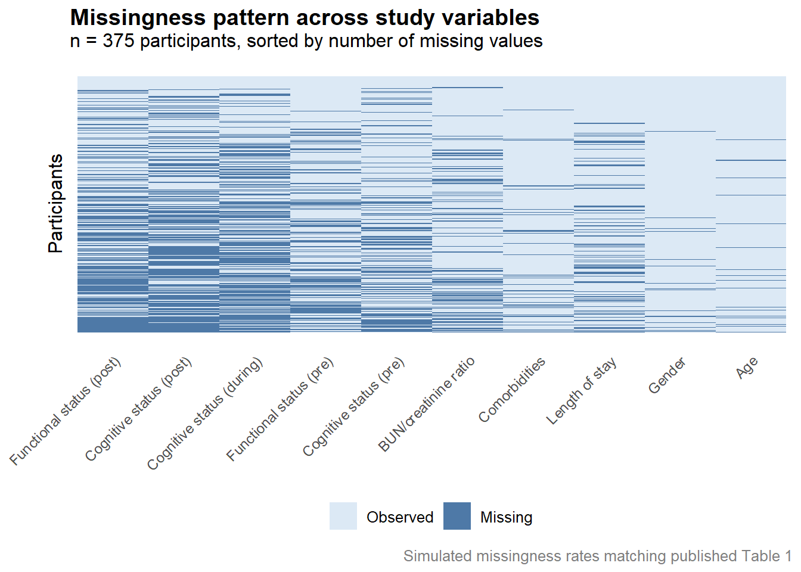

Associations between eating, mobility, and toileting functional dependence and COVID-19 symptoms
statistics
applied
regression
missing data
A retrospective cohort study examining associations between pre-COVID functional dependence and symptom burden, and between symptoms and post-COVID functional decline in skilled nursing facility residents. Covers multiple imputation by chained equations (MICE) for substantial outcome missingness, ordinal regression, and the practical tension between multiple comparisons corrections and applied research priorities.
This project originated through consulting work with the Master’s in Statistical Practice (MSSP) program at Boston University, where I served as a PhD Senior Consultant. This work resulted in a peer-reviewed publication in JAMDA (Canter et al., 2024)
Did pre-COVID-19 functional dependence predict symptom severity, and did symptoms predict post-COVID-19 functional decline in skilled nursing facility residents?
I was brought on as a lead statistician for a study examining the relationship between functional dependence and COVID-19 outcomes in skilled nursing facility (SNF) residents. The clinical question was two-directional: did functional status before COVID-19 predict which symptoms patients developed during illness, and did those symptoms in turn predict functional decline after illness? The data came from 375 residents at a single SNF in New York City during the first wave of the pandemic in 2020.
The ADLs of interest were eating, toileting, and functional mobility — each scored on a 0–4 dependence scale, with functional mobility as a composite of bed mobility, transfer, and locomotion. These were chosen because most SNF residents have already lost independence in dressing and hygiene by admission; eating, toileting, and mobility represent the remaining functional variation in this population.
Statistical Considerations
Missing Data and MICE
In this study the MAR assumption is reasonably defensible. Patients with missing post-COVID functional assessments were often those who had been discharged, hospitalized, or had died — outcomes that are themselves recorded and can be included as predictors in the imputation model. This is meaningfully different from a situation where the sickest patients are missing for unknown reasons.
To assess the plausibility of the MAR assumption before proceeding with imputation, we used missingness pattern heatmaps — visualizations where rows represent participants and columns represent variables, with cells colored by whether data are observed or missing. These allow you to see at a glance whether dropout is clustered in ways that suggest systematic rather than random missingness. In this case, the patterns were consistent with MAR: missingness in post-COVID functional status was associated with observable outcomes like hospitalization and discharge rather than appearing random or clustering around particularly sick patients in ways that couldn’t be explained by observed data. We also examined distributions of key baseline variables split by missingness status — if patients with missing outcomes looked systematically different from those with observed outcomes on baseline characteristics, that would raise MNAR concerns. They did not differ substantially.
Below is an example using simulated data of checking the MAR assumption.
Analytic Scope and Scope Creep
One of the biggest lessons from this engagement had little to do with statistics. The clinical narrative of the study required modeling a large number of relationships: four primary regressions examining baseline ADLs and symptoms, three ordinal regressions examining symptoms and post-COVID function, and seven sensitivity analyses controlling for length of stay. Each model was clinically motivated, but the cumulative scope was substantial.
In consulting work, scope has a way of expanding incrementally — one more model, one more sensitivity analysis, one more subgroup — until the project is significantly larger than originally scoped. Each individual addition is reasonable; the problem is the accumulation. Looking back, I would have pushed harder to define the analytic plan in full before any analysis began, and to treat deviations from that plan as explicit decisions rather than natural extensions of the work.
Multiple Comparisons
Running this many models raises an important statistical concern: multiple comparisons. When many hypotheses are tested simultaneously, the probability of obtaining at least one false positive by chance alone increases substantially. With the number of models run here, a formal correction such as Bonferroni or Benjamini-Hochberg FDR adjustment would be warranted — and under either correction, the significant results in this paper would not survive.
This was a genuine point of contention during the consulting engagement. I want to be careful about how I describe this publicly, so I’ll say only that in applied work, statistical recommendations don’t always survive contact with a research team’s priorities, and that navigating that tension is part of the job. I pushed for correction; the paper does not apply one.
How do I feel about that in retrospect? Honestly, ambivalent. The multiple comparisons concern is real and I stand by raising it. At the same time, the downstream consequence of this research is that clinicians may pay closer attention to dehydration risk in SNF patients with eating difficulties — which is a genuinely good outcome. Statistical purity and real-world impact are not always perfectly aligned, and pretending otherwise would be its own kind of dishonesty. What I would do differently is hold the line earlier and more firmly, before the analysis was complete and the investment in results was already made.
Regression Models
The first set of analyses used multiple logistic regression to examine associations between baseline ADL dependence and binary COVID-19 symptoms (lethargy, shortness of breath, fever), and multiple linear regression for dehydration as a continuous outcome (BUN/creatinine ratio). Each model controlled for cognitive status, comorbidity count, and the other symptoms not serving as the dependent variable.
The second set used ordinal regression to examine associations between COVID-19 symptoms and post-COVID ADL dependence, controlling for baseline functional status, cognitive status, and comorbidity count.
The use of ordinal regression for the second set is worth noting — ADL dependence scores are ordered categories (0 = independent through 4 = fully dependent), not continuous measurements. Treating them as continuous would impose the assumption that the difference between 0 and 1 is equivalent to the difference between 3 and 4, which is clinically dubious. Ordinal regression respects the ordering without that assumption.
Results
The main findings were:
- Pre-COVID eating dependence showed a trend toward association with dehydration during illness (p = .059), which did not reach conventional significance
- Dehydration during COVID-19 was associated with greater functional mobility decline after illness
- Shortness of breath was associated with increased post-COVID eating and mobility dependence
- Lethargy was unexpectedly associated with lower post-COVID eating dependence — the authors hypothesize this may reflect that lethargy was more commonly reported in patients who were still eating independently, as the effort of eating independently may itself have been fatiguing during illness
Sensitivity analyses controlling for length of stay largely maintained these associations, with the exception of shortness of breath and eating, which trended toward but did not reach significance.
Conclusion
This study illustrates several realities of applied statistical consulting. Technically, the MICE implementation was the right call given the scale of missing data, and the ordinal regression approach was appropriate for the outcome structure. The analytic approach was sound.
The harder lessons were about process. Scope creep is real, and the best time to prevent it is before the first model is run. The multiple comparisons issue is a genuine limitation that I believe should have been addressed more formally — and that I would advocate for more firmly if I were doing this again.
That said, research like this doesn’t need to be methodologically perfect to be useful. If the findings prompt clinicians to more proactively manage hydration in SNF residents with eating difficulties during illness, that’s a meaningful outcome. The goal of applied statistics isn’t methodological purity for its own sake — it’s producing evidence that is honest about its limitations and still moves practice in a better direction.